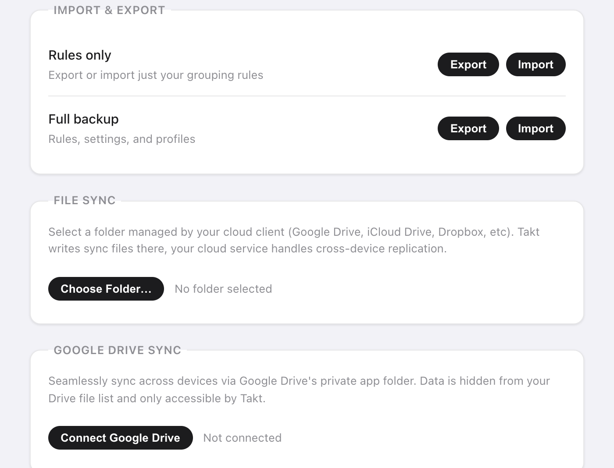

Short answer: open Takt's options page, go to Settings, and choose one:
- Export a JSON file: rules only, or a full backup.
- File Sync: Takt writes to a folder that Google Drive, Dropbox or iCloud Drive syncs for you.
- Drive Sync: Takt syncs to a hidden app folder in your Google Drive, every 15 minutes.
All three are Premium. None of them sends your data to a Takt server.
Why aren't my Chrome tab groups syncing?
Chrome's own tab group sync confuses a lot of people. Two things trip them up:
- It needs Saved tab groups turned on in the sync settings of every device.
- A synced group lands in the bookmarks bar. It doesn't open by itself.
If you only want a few groups on a second computer, check that setting first. It's free and built in.
Takt solves a different problem. It doesn't sync your open tabs live. It syncs the setup behind them: your rules, profiles, saved sessions and hibernated tabs. Your rules rebuild the same groups on each computer as you browse. A saved session reopens a whole workspace when you ask for it.
How do I back up my tabs and rules to a file?
In Settings → Import & Export you get two rows:
| Option | File | Contains |
|---|---|---|
| Rules only | takt-rules.json | Your grouping rules |
| Full backup | takt-backup.json | Rules, settings, profiles, saved sessions and hibernated tabs |
Use Rules only to share a rule set with a colleague. Use Full backup before reinstalling Chrome or moving to a new computer.
On import, files are limited to 5 MB. Rules and sessions are added next to what you have, and any with a name you already use are skipped. A full backup also replaces your settings and profiles with the ones in the file.

How do I sync through Dropbox, iCloud or a Google Drive folder?
Use File Sync. Takt writes plain JSON files to a folder you pick. Your cloud client uploads them like any other file.
- Click Choose Folder… and pick a folder inside your Drive, Dropbox or iCloud Drive folder, for example
Dropbox/Takt/. - Click Sync Now. Takt writes
rules.json,profiles.json,sessions.json,hibernated.jsonandmeta.json. - Tick Auto-sync on every change to rewrite the files about 2 seconds after your last edit.
- On the other computer, click Import from Folder and pick the same synced folder.
No sign-in, and you can open the files and read them. Any cloud service with a desktop folder works.
The trade-off: it's one-way per computer. Each computer writes its own copy, and you pull another computer's data in with Import from Folder. If Chrome loses access to the folder, Takt shows a Re-authorize button.
How does Google Drive sync work?
Click Connect Google Drive and sign in once. Takt stores its files in Drive's hidden app folder. It's separate from your Drive files and doesn't appear in the Drive interface.
Takt asks Google for two permissions only:
- Drive app data: read and write a folder only Takt can see. It can't list or open your other files.
- Email address: to show which account is connected.
Tick Auto-sync every 15 minutes and Takt syncs in the background. For a new computer, connect the same account and click Force Pull to replace its rules, profiles and sessions with the copy on Drive. Force Push does the opposite and overwrites Drive. Both are immediate and can't be undone from inside Takt.
Which method should I use?
| Chrome tab group sync | JSON export | File Sync | Drive Sync | |
|---|---|---|---|---|
| What moves | Saved tab groups | Rules, or a full backup | Rules, profiles, sessions, hibernated tabs | Rules, profiles, sessions, hibernated tabs, hibernation settings |
| Automatic | Yes | No | Writes yes, import by hand | Every 15 minutes |
| Cloud | Your Google account | None | Any desktop sync folder | Google Drive only |
| Cost | Free | Premium | Premium | Premium |
One more detail: Takt keeps rules, settings and profiles in Chrome's sync storage, which follows your Chrome account when Chrome sync is on. Sessions and hibernated tabs stay local, so those need one of the methods above.
What backup and sync don't do
- No live tab mirroring. Open tabs on one computer don't appear on another. Save a session and restore it there.
- Last write wins. There's no merge of edits made on two computers at once. Pick one computer to edit on, or push and pull on purpose.
- Drive Sync is Google only. Use File Sync for Dropbox, iCloud or anything else.
Set it up once. Take it to every computer.
Add Takt to Chrome, freeFAQ
Why aren't my Chrome tab groups syncing?
Chrome needs Saved tab groups turned on in the sync settings of every device, and synced groups appear in the bookmarks bar rather than opening by themselves.
Does Takt sync my open tabs live between computers?
No. It syncs your rules, profiles, saved sessions and hibernated tabs. Rules rebuild the same groups on each computer, and a saved session reopens a whole workspace.
Can Takt read my Google Drive files?
No. Drive Sync uses only the app data scope, a hidden folder only Takt can see, plus your email to show the connected account. See how Takt keeps data local.
Are backup and sync free?
No. JSON export and import, File Sync and Drive Sync are Premium, $3/month or $30/year.